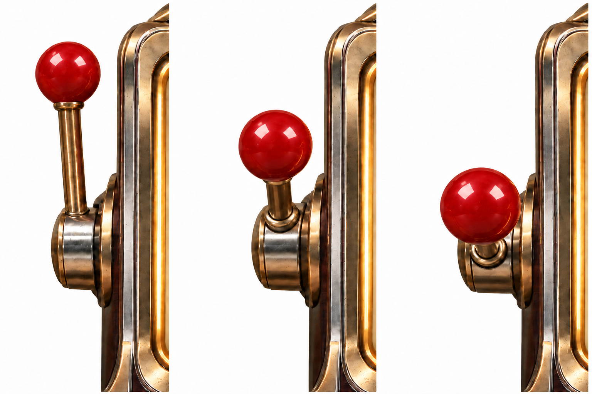

左側拉桿・姿態提案 02｜球頭透視調整
越靠近玩家，紅色球頭逐步放大
沿用選定的案二造型，從左到右比較直立、半拉、拉到底。球頭隨拉桿靠近而逐步放大，並保留桿根向前下方翻轉的接合造型。

- 直立保留起始球頭大小，作為遠近比例的基準。
- 半拉紅球略微放大並保持圓形，頸部接合隨透視自然銜接。
- 拉到底紅球放大更明顯，搭配短縮桿身與向下翻轉的接合處，表現朝玩家靠近。
左側拉桿・姿態提案 02｜球頭透視調整
沿用選定的案二造型，從左到右比較直立、半拉、拉到底。球頭隨拉桿靠近而逐步放大，並保留桿根向前下方翻轉的接合造型。
